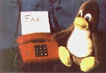

Wir machen Fax(en)
Wer also Fax machen will, ist auf ein analoges Modem angewiesen. Als Software bietet sich sofort mgetty+sendfax von Gert Doering an. Hier gleich eine Warnung: mit Billigmodems (40 Mark im Laden um die Ecke) geht sowas gerne schief! Ich habe mit einem solchen Billigteil eine Woche Zeit und unzählige Telefoneinheiten verplempert, bis ich eingesehen hatte, daß hier einfach etwas besseres her mußte. Das neue Modem war acht mal so teuer - lief aber dafür auf Anhieb!
Hier also die Beschreibung, wie man mit einem Analogmodem Fax empfangen kann. Mein Anschluß ist inzwischen total "sophisticated": ich habe parallel einen Anrufbeantworter (vgetty) laufen, der automatisch erkennt, wenn ein Fax oder Daten kommen, und dann entsprechend handeln kann.
Mgetty muß man sich zunächst holen, zum Beispiel hier: ftp.leo.org/pub/comp/networking/communication/modem/mgetty/mgetty-latest.tar.gz
root:# cp policy.h_dist policy.h root:# _und editieren. Folgende Umstellungen sollten gemacht werden (alle anderen sind nach den Erfordernissen des Modems, der Telefonanlage und des eigenen Geschmacks zu konfigurieren):
#define LOG_PATH "/var/log/mgetty.%s" #define MGETTY_PID_FILE "/var/run/mgetty-pid.%s" #define MODEM_CHECK_TIME -1 /* will not test modem periodically */ #define FAX_IN_OWNER "<user>" /* my username */ #define FAX_LOG "/var/log/fax-log" #define FAX_STATION_ID "++49 xxxx yyyyyy" /* my ID */ #define FAX_MODEM_TTYS "ttyS1"Man lasse sich unbedingt von der guten Doku leiten!
Jetzt editiert man noch das Makefile und baut ein:
/usr/src/mgetty-0.99.x/Makefile (Ausschnitt) ... INSTALL=install -c -o root -g root ...Und nun machen wir's:
root:# make root:# make install root# _Damit mgetty sich auf die Lauer legen kann, muss man es in die Init-Tabelle eintragen. Der folgende Eintrag leistet das (hier für den Fall, daß das Modem an /dev/ttyS1 hängt - der Chat-String muß dem Modem entsprechend angepaßt sein!):
S1:23:respawn:/usr/local/sbin/mgetty -m '"" ATZ0 OK ATA' -x 3 -n 5 /dev/ttyS1Damit nimmt mgetty nach dem fünften Klingeln ab und nimmt Daten entgegen.